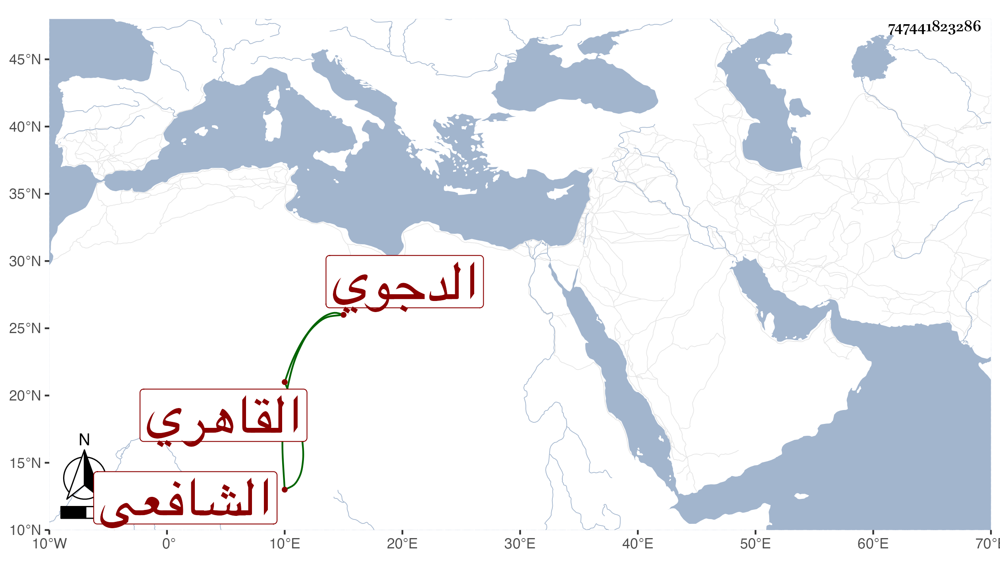

0902Sakhawi.DawLamic.ITO20230111-ara1.EIS1600.747441823286
Biography ID: 747441823286
595
محمد بن محمد بن محمد بن علي بن أبي بكر بن عبد المحسين المحب بن الزين الدجوي الأصل القاهري الشافعي الماضي أبوه. ولد في أحد الربيعين سنة سبع وخمسين وثمانمائة وحفظ القرآن وأربعي النووي ومنهاجه وجمع الجوامع وألفية ابن ملك وغيرها وعرض علي في الجماعة وأخذ عن البامي وكذا عن الجوجري لكن قليلا في آخرين وأسمعه أبوه مع الولد أشياء على جماعة وجلس مع والده شاهدا إلى أن تعلل ثم مات في حيات أبويه يوم الاثنين ثاني شوال سنة ثمانين وصلي علي في يومه بجامع المارداني في مشهد حافل ودفن عند سيدي أبي العباس البصير من القرافة . وكان عاقلا جميلا صينا عوضه الله وأبويه الجنة .
